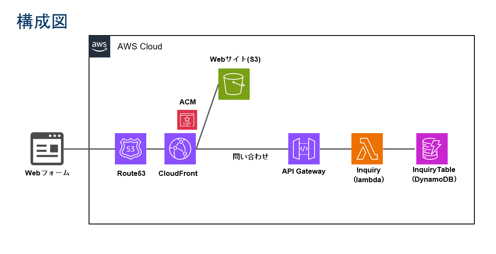
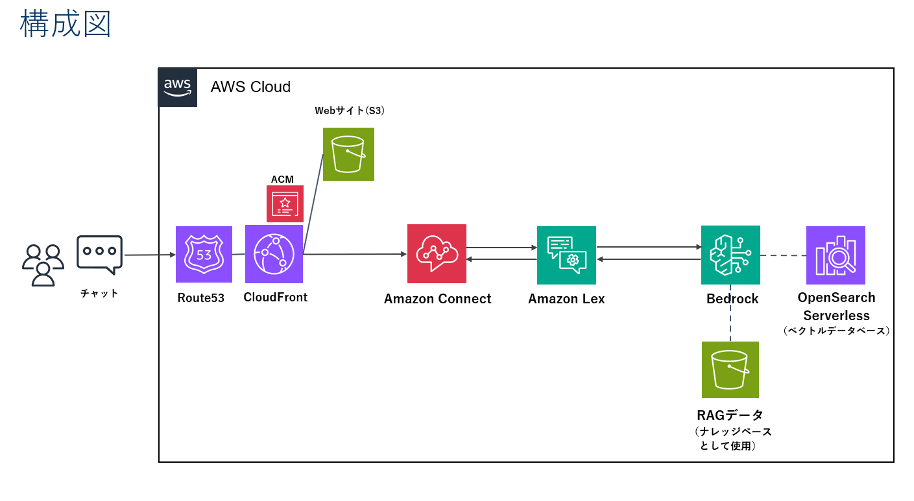
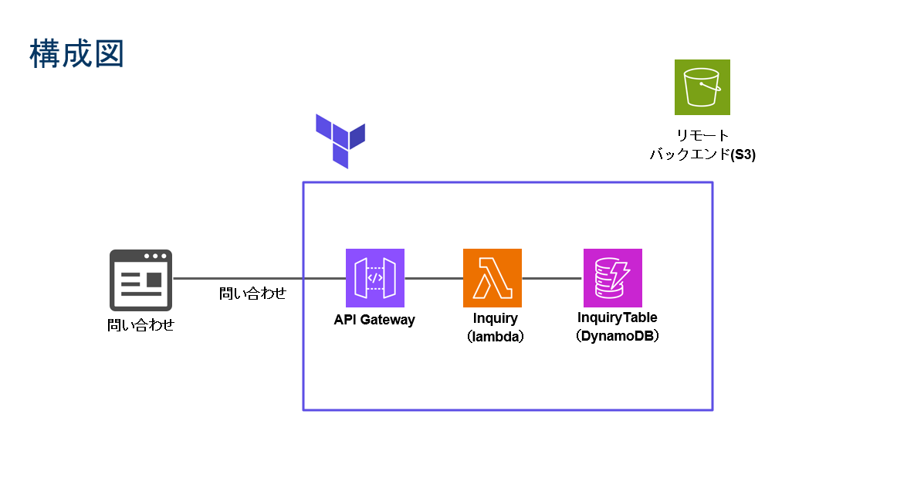
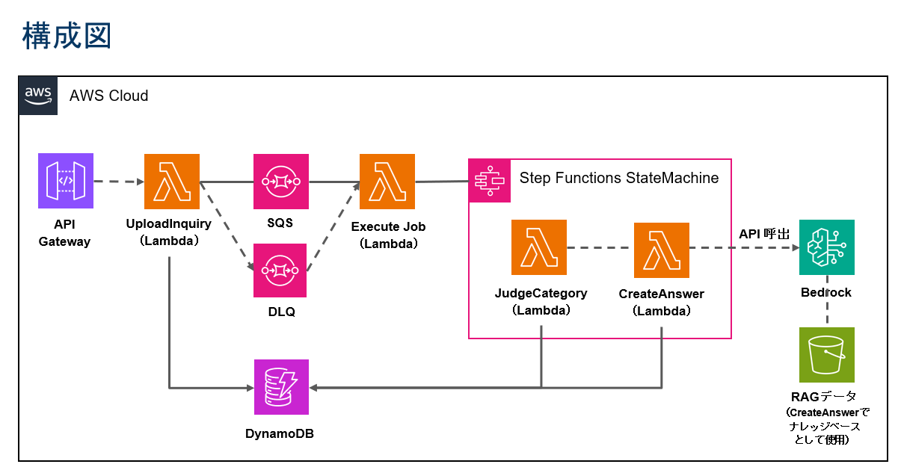

MARUKOの
PORTFOLIOへようこそ
自己紹介
【経歴概要】
2023年3月に大学を卒業した後、中小企画制作会社でWebディレクター・WebデザイナーとしてWeb制作（WordPress/ECサイト構築）を中心に従事してきました。サイトのデザインやマークアップだけでなく、サーバー運用、セキュリティ対策、運用保守といった技術面にも携わり、要件定義の段階から実装・運用まで一貫して担当してきました。
【AWSを学んだきっかけ】
Web制作を続ける中で、サイトの「見えない部分」（速度やセキュリティ、システムの信頼性と可用性）の大切さを強く感じました。そうした仕組みを自分の手で実装できるようになりたいという思いから、AWSを中心としたクラウドインフラの学習を始めました。
【所持資格】
AWS SAA（2025/11）
AWS SAP（2025/11）
【現在の目標】
現在はクラウドを扱えるエンジニアを目指しています。これまでのWeb制作の経験を糧にしつつ、クラウドのサーバー構築から運用・監視・自動化まで一貫して対応できる人材となるため、基礎を大切にしながら技術を常に学び続け、開発に取り組んでいきます。
よかったら、右下のチャットボットに話しかけてみてください。
私のことを詳しく紹介しています。
AWS関係の制作物
CloudTech Academyで現役エンジニアのレビューを受けながら、Web3層冗長化構成、ECS/Lambdaによるコンテナ・サーバーレス構成、監視設計、CI/CDパイプライン、TerraformによるIaC化まで、構成図の作図、コード化、動作検証をハンズオン形式で実践し、一部をGitHub上に公開しています。
AWS サーバーレス お問い合わせフォーム
AWS の主要サービス（API Gateway／Lambda／DynamoDB）を利用して、静的 Web フォームから入力を受けて API 経由でデータ保存まで行う構成を実装。
セットアップ手順に加え、CORS や CSP などセキュリティ対応もREADME に記載しています。

独自のRAGを用いたチャットボットの構築
Amazon Bedrock／Amazon Lex／Amazon Connect
を連携して、Webサイト埋め込み型のチャットボットを構築。
READMEには構成図、前提条件、設定手順、CSPや文字数制限などのトラブルシューティングも記載しています。

Terraform によるサーバーレス API 構築
Terraform を用いて、API Gateway／Lambda／DynamoDB
の構成をコードで管理。可用性を高めるため、環境変数やリージョン設定を外部ファイル（tfvars）で管理する仕組みを実装。
tfstate を S3 バックエンドに設定する構成にしています。

問い合わせ自動応答ワークフローを Step Functionsで構築
AWS Step Functions を中心に、Lambda／SQS／DynamoDB／Bedrock
を組み合わせて、問い合わせ受付からカテゴリ判定・自動応答生成までを自動化するサーバーレスワークフローを設計。
各 Lambda に環境変数を設定し、Bedrock連携による自然言語応答を実装しました。
